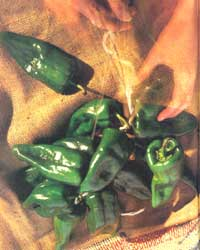

Easy to raise and as versatile as they are various, peppers belong in every one's kitchen garden.
If there's a taste that comes close to the freshness of the scent of newly cut grass or of a fern forest after rain, it's the cool, marvelous munch of a homegrown sweet pepper. And for those of us who've spent happy days sampling south-of-the-border cuisine, dining would be dull indeed without the pungent jolt of an occasional chili.
Peppers have been appreciated for a long time. Remains of these South American natives are found in Peru's prehistoric ruins, and by the time Christopher Columbus reached this continent, they were widely cultivated in both Central and South America and throughout the Caribbean. Though they are entirely different from the true spice pepper, Piper nigrum, which Columbus had expected to find in his search for a new route to the East Indies, he was delighted with these New World vegetables, and their use spread throughout Europe and India in the sixteenth and seventeenth centuries.
What to Grow
Most of the hot and sweet peppers grown in the United States belong to the species Capsicum annuum, with the sweet or bell peppers classed in the Grossum Group and the principal condiment peppers (cayenne, chili and paprika) belonging to the Longum Group. Though many sources consider hot peppers as members of C. frutescens, this species more correctly refers to the superhot Tabasco pepper, which in this country is grown only on the Gulf Coast. But whatever type you grow (and there are plenty of varieties to choose from), cultivation is approximately the same.
Among earlier maturing sweet peppers, familiar standbys are Earliest Red Sweet and Ace Hybrid, though such newer hybrids as Early Prolific and Early Thickset quickly gained acceptance. Skipper is a thick-walled type that's good for stuffing. A later-maturing pepper, also good for stuffing, is the popular Bell Boy. Tasty Hybrid is justly named, and a prolific producer, as well. And, though thin-walled, one of the best nonhybrids is mosaic-resistant Staddon's Select. (Among others resistant to this disease are Keystone, Belle and Yolo Wonder.) There's also a wide variety of giant sweet peppers, including Green Boy, Wonder Giant, Big Bertha and Big Stutter.
Ornamental peppers tend toward the blazing hot, but Dutch Treat is a mild-tasting exception. Anaheims are slightly pungent, while jalapeños sizzle on the tongue. Prolific and easy to grow are Hungarian Wax, Hot Banana and Goldspike. Cayennes, such as the Long Red Cayenne, are usually fiery, but the early-maturing Zippy Hybrid is a much milder version. And though we think of hot peppers as being small, Numex Big Jim, though not overly spicy, has fruits as large as the sweet Big Bertha. For gardeners in the Deep South, Dr. Greenleaf Red Hot Tabasco is one of the best (and hottest) of that type. Remember, though, that different varieties will cross-pollinate, but that won't affect their taste the year they're planted. Therefore, if you don't save the seeds, you can plant hot and sweet peppers in the same bed.
How to Grow
Peppers are a warm-weather crop. Even though they're perennials in their native habitats, they're grown as half-hardy annuals elsewhere, unless kept indoors. Yields are reduced when the temperature goes below 55°F. On the other hand, blossoms can drop if the thermometer reaches above 90° F. Peppers also require a long growing season and can be seeded directly in the ground only in the warmest climates. Most gardeners buy young plants instead of starting their own. However, though peppers are slightly more difficult to grow from seed than, say, tomatoes or even eggplants, cultivating seedlings offers a gardener a wide choice of varieties.
Even under warm indoor conditions, seeds can take up to two weeks to germinate, so plant them about eight weeks before the last expected spring frost. Use peat pellets, vermiculite or a finely screened mixture of equal parts of sand, loam and compost. (An inorganic planting medium isn't as likely to harbor the fungus that causes damping off. If you use garden soil, sterilize it first by baking it in a medium oven for at least 30 minutes.) Generally speaking, one 15-foot row of seven or eight plants, each of which can produce as many as 30 fruits, will provide enough peppers for a family of four. A packet of hybrid seed (many of which have a germination rate of about 75%) will grow a minimum of about 50 plants. The seed will remain viable for two years.
Sow seeds ¼ inch deep, and keep the medium uniformly moist. Since seeds will lie dormant if cool, put the growing container in a warm, sunny window. After the first true leaves show, prick out each plant to a three-inch pot filled with a sterilized potting soil, and transplant the seedling to a larger pot before it becomes root-bound. When the plant is about six inches tall, pinch off the growing point to encourage bushiness.
Once the danger of frost is past, it's still best to avoid moving these half-hardy plants directly outdoors. Take a week or two to harden them off in a cold frame, or put them outside on sunny days and bring them inside for warmth at night. Once the weather is settled and the earth is warm (a soil temperature of 65°F is ideal), choose a sunny location protected from the wind with well-worked, well-drained, fertile loam with a pH of 6.0 to 7.0. To enrich the soil, use rotted compost; avoid fresh manure, since too much nitrogen will encourage leaf growth to the detriment of the fruit. Instead, add potash in the form of granite dust, greensand, seaweed and wood ashes. If your soil is deficient in magnesium (a lack of which can cause leaf drop, poor production and sunscald of fruit), use dolomite lime, talc or Epsom salts to provide this essential nutrient.
Make sure the garden soil is moist before setting out the young plants. (If transferred to the garden in the evening, they are less likely to wilt.) Place them 18 to 24 inches apart with three feet between rows. (In very dry climates, put them closer together to conserve moisture.) Water as often as necessary to keep the ground uniformly damp. This is especially important when the blossoms open and the fruit is forming, since dry soil puts the plants under stress and can cause blossom-end rot. Don't, however, overwater. Organic mulches, such as grass clippings, help conserve moisture and keep down weeds at the same time. Be careful when weeding not to disturb the peppers' roots. As the flowers fade and the fruit begins to form, provide a dose of weak liquid fertilizer.
When growing peppers in containers, water them every day, and once flowers and fruit start to appear, apply a liquid fertilizer each week. Handpicking a few of the first flowers will encourage fruit formation.
What to Watch For
If given fertile soil and proper moisture, peppers are seldom hassled with pests or diseases. Occasionally, they're hit with aphids, flea beetles or Colorado potato beetles, but all three can be controlled with hard hose sprays, sticky traps, garlic sprays, diatomaceous earth and wood ashes. In addition, ladybugs, lacewing flies and praying mantises consume aphids; nearby eggplant, flax and green beans help repel Colorado potato beetles; and tansy planted between rows discourages cutworms. The latter pest can also be controlled by placing cardboard collars in the ground around the peppers' stems. And, of course, keeping the garden free from refuse can help reduce most insect problems.
Among diseases, anthracnose (a fungus that causes ugly brown spots and black lesions on the fruit) can be avoided by allowing three years to pass before again planting peppers, or other relatives of the nightshade family, in a particular location. Mildew, bacterial spot and tobacco mosaic can be avoided by simply raising resistant varieties. (If you smoke, wash your hands before working with peppers to keep from spreading mosaic.)
How to Harvest and Store
Peppers will be ready to harvest from late summer until the weather cools. When fruits are of sufficient size and their flesh is firm with a smooth, even color, pick them at least once a week to encourage production. Green peppers will eventually turn a rich red or yellow, depending on the variety, and these brightly colored fruits will be somewhat sweeter than green ones. (Pimento and paprika peppers are always harvested in their dark red, ripe stage.) However, once the color changes, they'll also go soft quickly, and leaving them on the vine too long will reduce yields. These later-picked colorful peppers, however, contain more vitamin C (120 to 180 milligrams for each average-sized fruit) than do those in the green stage. Peppers also provide 700 to 3,000 international units of vitamin A, 30 to 70 milligrams of thiamin and 28 milligrams of phosphorus. All this nutrition is in a package containing around 25 calories.
When frost is predicted, harvest all the remaining fruit, and-once the last pepper is picked-pull up and compost or burn the plants to prevent future pest and disease problems. To avoid damaging the plant, use a sharp knife or pruning shears to cut off the peppers and handle them carefully, because they bruise easily.
Sweet peppers are excellent eaten like apples. You can also, of course, slice them up in salads, stir-fries and meat loaves, or stuff them with brown rice, soybean grits or meat/vegetable/egg mixtures and bake them or simmer them in a covered casserole.
Hot peppers should be fully ripe for drying or pickling. Thin-walled varieties are easy to dry and can be ground and stored in jars. (This method is also used for paprika peppers.) To dry them, either cut the whole plant and hang it in an airy place, or string individual pods to hang in the kitchen for both ornamental and culinary use.
Peppers don't need blanching before freezing. Just chop and freeze them in jars, or core and freeze them whole for future stuffed dishes.
To can red sweet peppers (or even hot ones), wash and remove the seeds, fill pint jars to ½ inch from the top, cover the fruits with boiling water, seal, and process for 25 minutes at 10 pounds of pressure.
Chiles Rellenos
6 large, fresh, green chili peppers
½ pound mozzarella cheese, shredded
4 egg yolks, beaten
½ teaspoon salt
4 tablespoons flour
4 egg whites, beaten stiff
4 tablespoons vegetable oil
Sear peppers on all sides under high broiler heat. Quickly wrap in damp towel to steam for a few minutes until the skins peel off easily. Split the fruit and remove seeds. Stuff with cheese. Make a batter of egg yolks, flour and salt. Fold in stiff egg whites. Dip stuffed peppers into batter one at a time, slip into hot oil, turn immediately, and allow one side to brown. Turn again to brown other side. Put on platter, and cover with Mexican sauce. Serves 3 to 6.
Mexican Sauce
1 tablespoon minced onion
1 clove garlic, minced
1 tablespoon minced green pepper, sweet or hot
2 tablespoons olive oil
1 cup stewed tomatoes, fresh or canned
½ teaspoon salt
Sauté onion, garlic and pepper in oil. Add tomatoes and salt, and continue stirring over medium-low heat until sauce reaches boiling point. Pour over stuffed peppers.
Stir-Fried Sweet Peppers
6 sweet peppers, red and green
3 tablespoons vegetable oil
1 clove garlic, minced
1 tablespoon tomato juice
1 tablespoon nutritional yeast (optional)
½ teaspoon oregano
Core peppers, remove seeds, and slice into strips. Sauté briefly in oil. Add remaining ingredients. Cover pan and simmer for 3 minutes. Serves 6.
SUSAN SAYS
MOTHER'S head gardener, Susan Sides, shares some knowledge gained, quite by accident, about harvesting hot peppers:
"It was fall, and the first frost threatened. I knew I should pull the hot pepper plants and bring them indoors. (It was too cold and too late to pick their ripe fruits.) Unfortunately, they were still loaded with immature fruit that would never ripen inside. I decided, therefore, to pull one plant but leave the rest in the garden. To my amazement, all the peppers left outdoors survived that first frost and went on to weather two more frosty nights. The extra time they had in the garden brought me a larger pepper crop that year, along with the knowledge that many types of chilies are hardier than we think."
|
 PHILIPPE-LOUIS HOUZE Many consider chiles rellenos the acid test of Mexican cooking. |
PHILIPPE-LOUIS HOUZE |
|